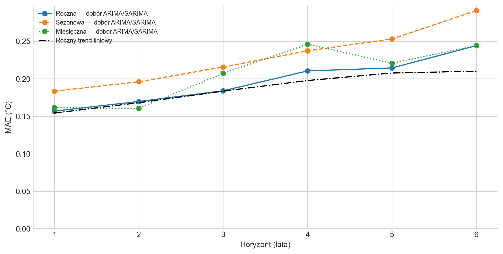
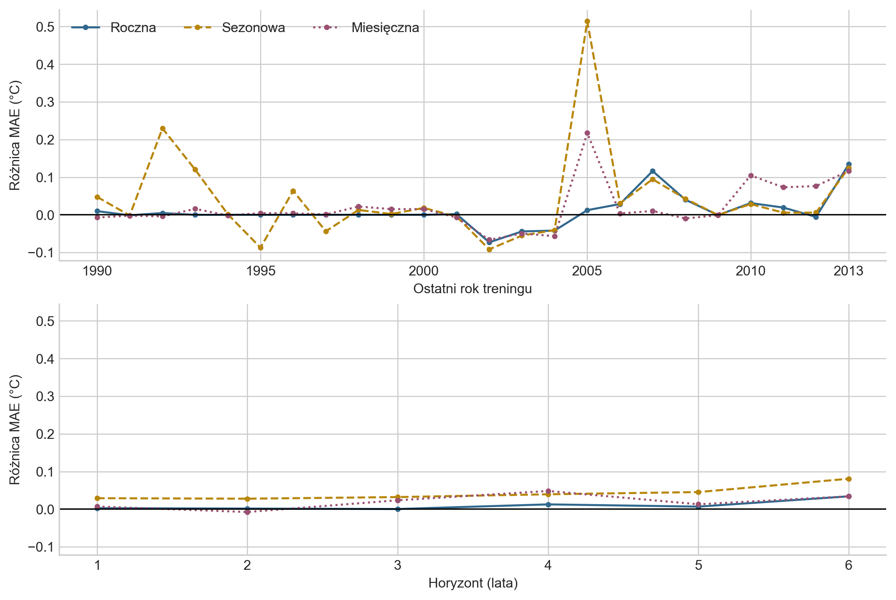
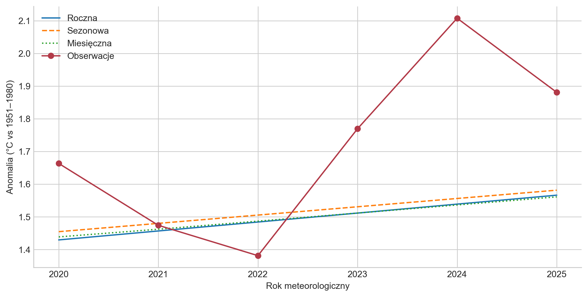

Zagnieżdżony dobór ARIMA i SARIMA przy wspólnym celu rocznym
Opublikowano
23 września 2026
Czy więcej szczegółów pomaga przewidywać?
Poprzedni eksperyment pokazał, że większa częstotliwość danych nie poprawia automatycznie prognozy rocznej. Żaden z prostych benchmarków wykorzystujących miesiące lub sezony nie pokonał rocznego trendu liniowego (Trend + period); warianty tego samego trendu osiągnęły po agregacji identyczny wynik.
To prowadzi do kolejnego pytania: czy model uwzględniający zależności między kolejnymi obserwacjami potrafi wykorzystać informację, której prosty trend nie wykorzystuje?
RRoczny szereg sprowadza każdy rok do jednej obserwacji. Poprzednia analiza pokazała jednak, że taka agregacja ukrywa część różnic wewnątrz roku: sezony różniły się tempem wzrostu anomalii, a zmiany ich zmienności nie przebiegały w jednym kierunku.
Dane sezonowe zachowują cztery obserwacje na rok, a miesięczne — dwanaście. Nie oznacza to czterech lub dwunastu niezależnych informacji. Zachowujemy natomiast więcej informacji o przebiegu anomalii wewnątrz roku i o zależnościach między kolejnymi obserwacjami.
To prowadzi do pytania, czy ta dodatkowa struktura ma znaczenie nie tylko opisowe, ale również prognostyczne.
ARIMA opisuje zależności w historii samego szeregu, wykorzystując jego wcześniejsze wartości i wcześniejsze błędy prognoz jednokrokowych. W przypadku niestacjonarnego szeregu różnicowanie może pomóc uzyskać serię o bardziej stabilnych własnościach, której dynamikę łatwiej opisać takim modelem. To inny sposób opisu dynamiki niż przedłużenie jednej prostej trendu. Wprowadzenie do ARIMA w Forecasting: Principles and Practice przedstawia tę rolę zależności czasowych.
SARIMA może dodatkowo modelować zależności między tymi samymi częściami kolejnych lat — na przykład między kolejnymi zimami albo wartościami oddalonymi o dwanaście miesięcy. Technicznie służą do tego składniki sezonowe działające w odstępach pełnego cyklu: czterech sezonów (m=4) lub dwunastu miesięcy (m=12).
Każda korzysta z innej szczegółowości danych, ale wszystkie prognozują ten sam cel roczny. Większa elastyczność ma tutaj wartość dopiero wtedy, gdy przekłada się na mniejszy błąd poza treningiem. Pytanie brzmi więc:
Czy informacja zachowana w bardziej szczegółowym szeregu pozwala lepiej przewidzieć tę samą wartość roczną?
Co właściwie prognozujemy?
Modelowaną zmienną jest anomalia temperatury nad lądami względem okresu odniesienia 1951–1980, a nie bezwzględna temperatura. Anomalia pokazuje, o ile temperatura odbiega od wartości typowej dla danego miesiąca w tym okresie. Nie należy więc oczekiwać takiego samego cyklu „zima–lato” jak w surowych temperaturach. Różnice między częściami roku i zależności czasowe mogą jednak pozostać.
SARIMA jest zatem hipotezą do sprawdzenia. Jeśli w anomaliach pozostają stabilne zależności powtarzające się w kolejnych latach, model sezonowy może je wykorzystać. Sama miesięczna częstotliwość nie przesądza o potrzebie sezonowego modelu ani sezonowego różnicowania.
Cel oceny pozostaje taki sam jak wcześniej: średnia dwunastu miesięcznych anomalii World, od grudnia poprzedniego roku do listopada, z jednakowymi wagami. Roczne i sezonowe dane treningowe powstają z tych samych miesięcy. Nie zastępuję tego celu opublikowanym agregatem Meteorological year.
Sprawdzam ograniczoną listę konfiguracji, a ich wybór odbywa się osobno dla każdej częstotliwości, wyłącznie na historii dostępnej w danym podziale. Wyniki dotyczą tych procedur i tego celu; nie rozstrzygają, czy dowolny model miesięczny mógłby pokonać dowolny model roczny.
Czy w miesięcznych anomaliach pozostała struktura czasowa?
Najpierw warto zobaczyć sam szereg. Poniżej pokazuję grudzień 1961 – listopad 1990, czyli 348 miesięcy należących do treningu pierwszego podziału walidacji. Korzystam z zachowanego historycznego wydania FAOSTAT. Jest to ilustracja dodana po przeprowadzeniu eksperymentu; nie służy do zmiany listy kandydatów ani ponownego doboru modeli.
Górny wykres przedstawia anomalie i dopasowany do tego okresu trend liniowy. Dolny pokazuje autokorelację (ACF): związek wartości z obserwacją sprzed określonej liczby miesięcy. Porównuję ACF oryginalnych anomalii z ACF reszt po odjęciu trendu, ponieważ sam trend może podwyższać autokorelację. Odjęcie prostej jest tu zabiegiem opisowym — nie jest różnicowaniem ARIMA ani gwarancją stacjonarności.
Rysunek 1: Miesięczne anomalie World i ich ACF w pierwszym okresie treningowym. Zaznaczone opóźnienia 12 i 24 miesięcy odpowiadają jednemu i dwóm latom. ACF bez pasm istotności; diagnostyka opisowa.
Kod
display(Markdown(f'Po odjęciu trendu ACF wynosi **{acf_residual[1]:.2f}** dla opóźnienia o miesiąc, **{acf_residual[12]:.2f}** dla 12 miesięcy i **{acf_residual[24]:.2f}** dla 24 miesięcy. Są to wartości z pierwszego okresu treningowego, nie miary trafności prognoz.'))
Po odjęciu trendu ACF wynosi 0.43 dla opóźnienia o miesiąc, -0.12 dla 12 miesięcy i 0.04 dla 24 miesięcy. Są to wartości z pierwszego okresu treningowego, nie miary trafności prognoz.
W tym okresie po odjęciu trendu pozostaje dodatnia zależność między sąsiednimi miesiącami. Przy opóźnieniu rocznym ACF jest ujemna, a przy dwuletnim bliska zeru. To powód, aby sprawdzić modelowanie zależności krótkookresowych, ale sam ten obraz nie stanowi mocnego argumentu za SARIMA. Pojedyncza wartość ACF przy 12 miesiącach nie dowodzi odrębnego mechanizmu sezonowego, a wykres nie rozstrzyga, czy zależności będą stabilne w kolejnych latach. Ich wartość prognostyczną sprawdza dopiero porównanie błędów na wspólnym celu rocznym.
Pierwsza odpowiedź: ranking historycznych błędów
Kod
from pathlib import Pathimport hashlib,jsonimport pandas as pdimport matplotlib.pyplot as pltfrom IPython.display import display,Markdownroot=Path.cwd().parentout=root/'results/frequency_arima'meta=json.loads((out/'provenance.json').read_text(encoding='utf-8'))for relative,digest in meta['code_sha256'].items():assert hashlib.sha256((root/relative).read_bytes()).hexdigest()==digest, 'Kod zmieniony: ponów frequency_arima.py'for source in meta['sources']:assert hashlib.sha256((root/source['path']).read_bytes()).hexdigest()==source['sha256'], 'Zmienione źródło'for relative,digest in meta['outputs_sha256'].items():assert hashlib.sha256((out/relative).read_bytes()).hexdigest()==digest, 'Zmienione wyniki'scores=pd.read_csv(out/'scores.csv')horizons=pd.read_csv(out/'by_horizon.csv')fits=pd.read_csv(out/'fits.csv')selections=pd.read_csv(out/'selections.csv')predictions=pd.read_csv(out/'predictions.csv')plt.style.use('seaborn-v0_8-whitegrid')plt.rcParams.update({'figure.dpi':130,'axes.spines.top':False,'axes.spines.right':False})labels={'annual':'Roczna','seasonal':'Sezonowa','monthly':'Miesięczna'}def table(frame):display(frame.style.format(precision=3).hide(axis='index'))dynamic=scores.query("stage=='cv' and model=='Selected ARIMA/SARIMA'")best=dynamic.sort_values('MAE').iloc[0]baseline=scores.query("stage=='cv' and frequency=='annual' and model=='Trend + period'").iloc[0]display(Markdown(f'W historycznej walidacji najniższe MAE spośród trzech procedur ARIMA/SARIMA osiąga **procedura {labels[best.frequency].lower()}: {best.MAE:.3f}°C**. Roczny trend liniowy (`Trend + period`) z poprzedniego etapu osiąga **{baseline.MAE:.3f}°C**. Porównanie obejmuje te same cele roczne i podziały czasowe.'))
W historycznej walidacji najniższe MAE spośród trzech procedur ARIMA/SARIMA osiąga procedura roczna: 0.197°C. Roczny trend liniowy (Trend + period) z poprzedniego etapu osiąga 0.187°C. Porównanie obejmuje te same cele roczne i podziały czasowe.
Żadna z trzech badanych procedur ARIMA/SARIMA nie osiąga niższego średniego błędu niż roczny trend. Możliwość modelowania dodatkowych zależności nie przełożyła się tutaj na lepszą prognozę roczną. Nie oznacza to, że zależności nie istnieją ani że dane miesięczne są bezużyteczne — badane procedury nie potrafiły przełożyć dodatkowej szczegółowości na niższy średni błąd prognozy rocznej w historycznej walidacji.
Sam ranking średnich błędów nie dowodzi trwałej przewagi. Dalsza część pokazuje, jak oddzielam wybór konfiguracji od jej oceny, a następnie sprawdza, czy wynik zależy od daty rozpoczęcia prognozy i jej horyzontu. Osobno przedstawiam retrospektywną ocenę lat 2020–2025, które były już wcześniej oglądane w projekcie.
Jak zapobiegamy doborowi do testu?
Zewnętrzne początki prognozy to 1990–2013, a horyzonty to 1–6 lat. Dla początku zewnętrznego T wewnętrzne początki to T−8, T−7 i T−6. Każdy prognozuje sześć lat; najpóźniejszy cel wewnętrzny kończy się w T. Przykładowo dla 1990 r. wybór wykorzystuje początki 1982, 1983 i 1984 oraz obserwacje najwyżej do 1990 r. Dopiero potem model otrzymuje cały trening do 1990 i prognozuje 1991–1996.
Decyzja
Reguła
Początek treningu
Rok meteorologiczny 1962
Kryterium konfiguracji
MAE roczne z 18 błędów wewnętrznych, równe wagi horyzontów
Podział według dat
Koniec listopada; grudzień należy do kolejnego roku celu
Dopasowanie ponowne
Zwycięska konfiguracja dopasowana na pełnym zewnętrznym treningu
Brak zbieżności w środku
Kandydat wykluczony, jeśli zawiedzie choć jeden wymagany wewnętrzny fit
Brak zbieżności przy ponownym dopasowaniu
Następny kandydat w rankingu wewnętrznego MAE
Brak dopuszczalnego kandydata
Przerwanie eksperymentu; bez cichej zamiany na benchmark
Parametry dobieramy względem celu rocznego także dla modeli miesięcznych. Nie wybieramy konfiguracji według dopasowania na całym szeregu ani błędów zewnętrznego testu. Kosztowne dopasowania są współdzielone w pamięci, gdy konfiguracja i koniec treningu są identyczne; pamięć nie zmienia dostępnej informacji.
Mały, jawny zestaw kandydatów
Identyfikator
Specyfikacja
ar1_trend
ARIMA(1,0,0), stała i trend liniowy
arima011
ARIMA(0,1,1), bez drift
arima011_drift
ARIMA(0,1,1), z drift
arima110_drift
ARIMA(1,1,0), z drift
arima212_original
ARIMA(2,1,2), bez drift — odniesienie do pierwotnej specyfikacji
sarima011_100
SARIMA(0,1,1)(1,0,0)[m], z drift
sarima010_011
SARIMA(0,1,0)(0,1,1)[m], bez drift
Dwa ostatnie modele dotyczą tylko sezonów (m=4) i miesięcy (m=12). Uwzględniamy wariant bez różnicowania, różnicowanie zwykłe oraz wariant z różnicowaniem sezonowym. Nie zakładamy, że anomalie wymagają sezonowego różnicowania. To ograniczona lista hipotez, nie pełne poszukiwanie optymalnego modelu.
Roczna częstotliwość ma pięciu kandydatów, pozostałe po siedmiu. Eksperyment porównuje zatem procedury modelowania dla częstotliwości, nie izolowany efekt liczby obserwacji przy identycznej klasie modeli. Prognozy punktowe agregujemy równymi wagami. Nie tworzymy przedziałów rocznych ze średniej granic przedziałów miesięcznych.
Czy wynik zmienia się wraz z horyzontem prognozy?
Kod
fig,ax=plt.subplots(figsize=(9,4.5),layout='constrained')for freq,style inzip(labels,['-','--',':']): g=horizons.query("stage=='cv' and frequency==@freq and model=='Selected ARIMA/SARIMA'") ax.plot(g.horizon,g.MAE,style,marker='o',label=labels[freq]+' — dobór ARIMA/SARIMA')g=horizons.query("stage=='cv' and frequency=='annual' and model=='Trend + period'")ax.plot(g.horizon,g.MAE,'k-.',label='Roczny trend liniowy')ax.set(xlabel='Horyzont (lata)',ylabel='MAE (°C)',ylim=(0,None))ax.legend(fontsize=8)plt.show()table(scores.query("stage=='cv'").sort_values('MAE')[['frequency','model','n','MAE','RMSE','bias']])

(a) MAE na wspólnym celu rocznym; 24 zewnętrzne początki 1990–2013. Wybór ARIMA/SARIMA odbywa się osobno wewnątrz każdego treningu.
frequency
model
n
MAE
RMSE
bias
annual
Trend + period
144
0.187
0.225
-0.138
seasonal
Trend + period
144
0.187
0.225
-0.138
monthly
Trend + period
144
0.187
0.225
-0.138
annual
Selected ARIMA/SARIMA
144
0.197
0.233
-0.106
annual
Drift
144
0.206
0.261
-0.063
monthly
Selected ARIMA/SARIMA
144
0.207
0.253
-0.118
annual
Seasonal naive
144
0.224
0.281
-0.130
annual
Naive
144
0.224
0.281
-0.130
seasonal
Seasonal naive
144
0.224
0.281
-0.130
monthly
Seasonal naive
144
0.224
0.281
-0.130
seasonal
Selected ARIMA/SARIMA
144
0.229
0.288
-0.091
seasonal
Drift
144
0.266
0.364
-0.126
seasonal
Naive
144
0.274
0.370
-0.180
monthly
Naive
144
0.369
0.473
-0.124
monthly
Drift
144
0.388
0.488
-0.049
(b)
Rysunek 2
Każdą procedurę oceniamy dla 24 początków prognozy i sześciu horyzontów, co daje łącznie 144 porównania prognozy z obserwacją (24 × 6). Nie są to 144 niezależne przypadki: kolejne okresy treningowe i prognozowane lata częściowo się pokrywają. MAE jest główną miarą oceny, a RMSE i bias ją uzupełniają. Bias oznacza prognoza − obserwacja.
Jak stabilny był wybór?
Czy przewaga zależy od daty startowej?
Porównujemy te same cele z tych samych początków prognozy. Różnica to błąd bezwzględny danej procedury minus błąd rocznego trendu: poniżej zera wygrywa ARIMA/SARIMA, powyżej — trend. Każdy punkt na górnym wykresie jest średnią z sześciu horyzontów; każdy punkt na dolnym — z 24 początków. Trend jest odniesieniem wybranym po obejrzeniu historycznego rankingu, dlatego porównanie ma charakter opisowy.
Kod
import syssys.path.insert(0, str(root))from frequency_stability import verify_freezelock = verify_freeze()stability_dir = root/'results/frequency_stability'origin_delta = pd.read_csv(stability_dir/'by_origin.csv')horizon_delta = pd.read_csv(stability_dir/'by_horizon.csv')stability = pd.read_csv(stability_dir/'stability.csv')fig, axes = plt.subplots(2, 1, figsize=(9, 6), sharey=True, layout='constrained')for freq, style, color inzip(labels, ['-', '--', ':'], ['#31688e', '#b8860b', '#9a5071']):for ax, frame, x in [(axes[0], origin_delta, 'origin'), (axes[1], horizon_delta, 'horizon')]: g = frame.query("frequency==@freq and model=='Selected ARIMA/SARIMA'") ax.plot(g[x], g.delta_abs_error, style, color=color, marker='o', markersize=3, label=labels[freq])for ax in axes: ax.axhline(0, color='black', linewidth=1) ax.set_ylabel('Różnica MAE (°C)')axes[0].set_xlabel('Ostatni rok treningu')axes[0].set_xticks([1990, 1995, 2000, 2005, 2010, 2013])axes[1].set_xlabel('Horyzont (lata)')axes[0].legend(ncol=3)plt.show()

Rysunek 3: Sparowane różnice MAE względem rocznego trendu. Zmiany znaku pokazują, że ranking zależy od początku i horyzontu prognozy.
Kod
summary = stability.query("block==6 and model=='Selected ARIMA/SARIMA'").copy()summary['frequency'] = summary.frequency.map(labels)table(summary[['frequency','delta_MAE','wins','origins','low','high']].rename(columns={'frequency':'Seria','delta_MAE':'Δ MAE (°C)','wins':'Wygrane','origins':'Początki','low':'2,5% (°C)','high':'97,5% (°C)'}))
Seria
Δ MAE (°C)
Wygrane
Początki
2,5% (°C)
97,5% (°C)
Roczna
0.010
6
24
-0.014
0.027
Miesięczna
0.020
10
24
-0.004
0.036
Sezonowa
0.043
8
24
-0.003
0.079
Roczna ARIMA wygrywa z trendem w 6 z 24 początków, miesięczna w 10, a sezonowa w 8. Dodatnia średnia różnica błędów nie oznacza więc przegranej w każdym okresie. Wygrana dotyczy MAE z całych sześciu lat prognozy, nie liczby pojedynczych trafionych lat.
Jak bardzo wynik zależy od badanej historii?
Losujemy z powtórzeniami bloki sześciu kolejnych początków, zachowując razem wszystkie horyzonty i pary model–trend. Z możliwych bloków mieszczących się w latach 1990–2013 składamy 24 początki; ostatni blok przycinamy do wymaganej długości. Powtarzamy to 10 000 razy ze stałym ziarnem 20260924. Tabela pokazuje środkowe 95% otrzymanych średnich różnic. W dodatkowej kontroli stosujemy bloki długości 3 i 8.
Dla bloku sześciu początków wszystkie trzy zakresy obejmują zero. Dane nie uzasadniają mocnego wniosku o trwałej przewadze na podstawie samego średniego MAE. To orientacyjna analiza niepewności i wrażliwości na badaną historię, nie test istotności: mamy tylko 24 początki, nakładające się cele, wspólne treningi i możliwe zmiany procesu w czasie. Bloki ograniczają problem zależności, lecz go nie usuwają; długość bloku nie była estymowana. Zakresy nie są przedziałami predykcji przyszłej temperatury ani gwarancją pokrycia 95%.
Jakie konfiguracje wybierała procedura?
Kod
chosen=selections.query('selected == True and origin < 2019')table(chosen.groupby(['frequency','candidate']).size().reset_index(name='Wybrane podziały'))summary=fits.groupby('frequency').agg(dopasowania=('success','size'),udane=('success','sum'),sekundy=('seconds','sum')).reset_index()summary['nieudane']=summary.dopasowania-summary.udanetable(summary)
frequency
candidate
Wybrane podziały
annual
ar1_trend
4
annual
arima011
1
annual
arima011_drift
9
annual
arima110_drift
10
monthly
ar1_trend
10
monthly
arima011_drift
3
monthly
arima212_original
8
monthly
sarima010_011
1
monthly
sarima011_100
2
seasonal
ar1_trend
4
seasonal
arima011_drift
4
seasonal
arima110_drift
1
seasonal
arima212_original
3
seasonal
sarima010_011
1
seasonal
sarima011_100
11
frequency
dopasowania
udane
sekundy
nieudane
annual
149
147
11.720
2
monthly
204
199
53.663
5
seasonal
206
195
21.686
11
Liczby dotyczą unikalnych dopasowań wewnętrznych i ponownych dopasowań zewnętrznych, łącznie z oceną 2019. Wczesne odrzucenie kandydata po błędzie może zmniejszyć liczbę wykonanych dopasowań. Czas jest pomiarem tej maszyny, nie ogólną miarą wydajności. Ostrzeżenia i przyczyny niepowodzeń znajdują się w pełnym rejestrze.
Ocena późniejszych lat 2020–2025
Zamrożony zapis oceny
Zapis zamroziliśmy 24 września 2026 r., po obejrzeniu wyników. Jest to utrwalenie retrospektywnego eksperymentu, nie prerejestracja ani dowód wykonania prognoz w 2019 r. Kontrola SHA-256 obejmuje źródła, kod obliczeń, konfiguracje i wybory modeli oraz zapisane prognozy. Zmiana któregokolwiek z tych plików przerywa kontrolę; dalsze eksperymenty wymagają osobnej wersji, bez nadpisywania tej oceny.
Element
Utrwalona reguła
Trening
Historyczne wydanie, lata meteorologiczne 1962–2019; koniec 2019-11-30
Sześć rocznych celów 2020–2025 z zapisanego nowego wydania
Wybór benchmarku
Historyczne CV wskazuje roczny trend; nie zastępujemy go zwycięzcą późniejszej oceny
Wybór ARIMA/SARIMA
Osobno dla częstotliwości, wewnętrzne początki 2011–2013; cele do 2019
Aktualizacja
Jedna prognoza sześciu lat; bez douczania na obserwacjach testowych
Rewizje
Cel 2020 zawiera grudzień 2019 z nowego wydania; nie korygujemy nim treningu
To inna ocena niż audyt dawnej prognozy ARIMA(2,1,2). Tam celem jest opublikowany Meteorological year; tutaj rekonstruowana średnia miesięcy. Ich błędów nie łączymy w jeden ranking. Sześć lat pochodzi z jednej ścieżki prognozy, nie z sześciu niezależnych eksperymentów.
Dla końca treningu 2019 dobór konfiguracji korzysta z wewnętrznych początków 2011–2013 i celów najpóźniej z 2019. Trening pozostaje ze starego wydania FAOSTAT; cel roczny tworzymy z miesięcy nowego wydania. Nie aktualizujemy modelu kolejnymi obserwacjami testowymi.
Kod
table(selections.query('selected == True and origin == 2019')[['frequency','candidate','inner_MAE']])table(scores.query("stage=='retrospective'").sort_values('MAE')[['frequency','model','n','MAE','RMSE','bias']])
frequency
candidate
inner_MAE
annual
arima011_drift
0.202
seasonal
arima011_drift
0.217
monthly
sarima011_100
0.215
frequency
model
n
MAE
RMSE
bias
annual
Drift
6
0.224
0.264
-0.151
seasonal
Drift
6
0.236
0.286
-0.186
seasonal
Selected ARIMA/SARIMA
6
0.238
0.291
-0.195
monthly
Selected ARIMA/SARIMA
6
0.249
0.305
-0.213
annual
Selected ARIMA/SARIMA
6
0.249
0.304
-0.215
monthly
Drift
6
0.263
0.319
-0.236
seasonal
Seasonal naive
6
0.270
0.342
-0.240
annual
Naive
6
0.270
0.342
-0.240
monthly
Seasonal naive
6
0.270
0.342
-0.240
annual
Seasonal naive
6
0.270
0.342
-0.240
seasonal
Naive
6
0.285
0.358
-0.262
seasonal
Trend + period
6
0.290
0.350
-0.277
monthly
Trend + period
6
0.290
0.350
-0.277
annual
Trend + period
6
0.290
0.350
-0.277
monthly
Naive
6
0.324
0.403
-0.321
Kod
fig,ax=plt.subplots(figsize=(9,4.5),layout='constrained')for freq,style inzip(labels,['-','--',':']): g=predictions.query("stage=='retrospective' and frequency==@freq") ax.plot(g.year,g.forecast,style,label=labels[freq])ax.plot(g.year,g.actual,'o-',color='#b23a48',label='Obserwacje')ax.set(xlabel='Rok meteorologiczny',ylabel='Anomalia (°C vs 1951–1980)')ax.legend()plt.show()

Rysunek 4: Prognozy dobrane wyłącznie na danych do 2019 r. oraz cel roczny z miesięcy FAOSTAT 2020–2025. Eksperyment wykonany retrospektywnie.
To retrospektywne rozszerzenie: lata 2020–2025 były już oglądane w projekcie, a stare wartości mogą podlegać rewizjom. Zagnieżdżony dobór chroni obliczenia przed wykorzystaniem przyszłych celów, ale nie usuwa wcześniejszej wiedzy autora o danych ani nie odtwarza archiwalnych wydań dla każdego punktu startowego.
Które lata składają się na końcowy wynik?
Kod
frozen = pd.read_csv(stability_dir/'evaluation_2020_2025.csv')focus = frozen.query("model=='Selected ARIMA/SARIMA' or (frequency=='annual' and model in ['Trend + period','Drift'])").copy()focus['Procedura'] = focus.frequency.map(labels) +' / '+ focus.model.map({'Selected ARIMA/SARIMA':'ARIMA/SARIMA','Trend + period':'Trend','Drift':'Drift'})focus['Błąd bezwzględny (°C)'] = focus.error.abs()table(focus.pivot(index='year', columns='Procedura', values='Błąd bezwzględny (°C)').reset_index().rename(columns={'year':'Rok'}))
Rok
Miesięczna / ARIMA/SARIMA
Roczna / ARIMA/SARIMA
Roczna / Drift
Roczna / Trend
Sezonowa / ARIMA/SARIMA
2020
0.225
0.234
0.165
0.298
0.209
2021
0.012
0.017
0.050
0.080
0.006
2022
0.106
0.103
0.168
0.041
0.124
2023
0.258
0.258
0.195
0.319
0.239
2024
0.571
0.569
0.508
0.629
0.551
2025
0.320
0.315
0.256
0.374
0.299
Tabela ujawnia wkład każdego roku w MAE, lecz nie służy do wyboru nowego zwycięzcy. Najniższy późniejszy błąd driftu pozostaje wynikiem opisowym; procedurą wskazaną przez historyczne CV nadal jest trend.
Czy dodatkowa szczegółowość pomogła — i gdzie kończy się ten wniosek?
W historycznej walidacji tego eksperymentu większa szczegółowość szeregu nie przełożyła się na lepszą prognozę wspólnego celu rocznego. Roczna procedura ARIMA osiągnęła niższy średni błąd niż procedury sezonowa i miesięczna, ale wszystkie trzy ustąpiły prostemu trendowi liniowemu. Nie oznacza to, że miesięczne anomalie nie zawierają dodatkowej struktury. Badane procedury nie wykazały korzyści z jej wykorzystania mierzonej niższym średnim MAE względem rocznego benchmarku.
Ta odpowiedź zależy od okresu i sposobu oceny. ARIMA/SARIMA wygrywały z trendem w części dat startowych, a blokowa analiza niepewności nie uzasadnia mocnego wniosku o trwałej przewadze. W latach 2020–2025 najniższy błąd spośród procedur ARIMA/SARIMA ma wariant sezonowy, ale nadal nie pokonuje rocznego driftu. Zmiana rankingu między okresami przemawia za ostrożnością przy wyborze jednej częstotliwości.
Wyniki dotyczą jednej zmiennej, jednej listy kandydatów, określonych horyzontów i dwóch zapisanych wydań źródła. Ranking częstotliwości pozostaje opisowy; wybór najlepszej częstotliwości na podstawie zewnętrznego CV i raportowanie jej wyniku jako niezależnego sukcesu byłoby kolejną selekcją. Raport pokazuje wszystkie trzy procedury i benchmarki. Rozszerzenie na inne źródła wymaga osobnej kontroli definicji i agregacji.
Odtworzenie i źródła
Diagnostyka szeregu i ACF jest obliczana bezpośrednio w notebooku. Odczyt danych zapewnia temperature/series.py, a zgodność zamrożonych plików sprawdza frequency_stability.py. Wykres nie zmienia obliczeń prognoz ani listy kandydatów.
Eksperyment: python stories/globalne_ocieplenie/frequency_arima.py. Renderowanie notebooka odczytuje zapisane wyniki i sprawdza SHA-256 kodu, danych i tabel; nie uruchamia ponownie setek dopasowań. Po zmianie któregokolwiek wejścia należy ponowić eksperyment.
Stabilność i kontrola zamrożenia: python stories/globalne_ocieplenie/frequency_stability.py. Istniejący manifest nie jest nadpisywany. Dla zmienionych wejść należy zachować obecną wersję i utworzyć osobny eksperyment.